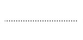

UML - Diagram prípadov použitia (Use Case Diagram)
Prípady použitia slúžia na špecifikáciu požadovaných použití systému. Zachytávajú požiadavky systému, teda čo systém má vykonávať. Kľúčové slová spojené s diagramom prípadov použitia sú: aktér, prípad použitia a hranica systému. Používatelia a iné systémy, ktoré môžu interagovať so systémom sa reprezentujú ako aktéri. Aktéri vždy modelujú subjekty mimo systému. Požadované správanie sa systému je špecifikované jedným alebo viacerými prípadmi použitia, ktoré sú definované podľa potrieb aktéra.Elementy a spojenia v UML .FRI:
- Aktér modeluje typ roly hranej entitou interagujúcou so systémom (výmena dát a signálov), ale nie je súčasťou systému, nachádza sa mimo jeho hraníc. Aktér môže reprezentovať rolu používateľa, externého hardweare-u alebo iného systému. Aktér sa modeluje ako "paličkový človek" spolu s menom aktéra.
- Prípad použitia je množina akcií vykonaných systémom, ktoré majú význam, resp. hodnotu pre aktéra alebo inú súčasť systému. Prípady použitia definujú správanie sa systému. Toto správanie zahŕňujúce interakcie medzi aktérom a systémom môže vyústiť v zmenách stavu systému. Prípad použitia môže byť použitý na znázornenie vonkajších požiadaviek ako aj na znázornenie funkcionality ponúkanej systémom aktérom mimo jeho hraníc. Prípad použitia sa modeluje ako elipsa a meno prípadu použitia je napísané vo vnútri elipsy.
- Asociácia je vzťah medzi pripadom použitia a iným prípadom použitia alebo medzi aktérom a prípadom použitia. Tento vzťah popisuje vzájomnú interakciu medzi danými entitami, t.j. výmena dát, signálov a informácií. Znázorňuje sa plnou čiarou.
- Vzťah "include" popisuje vzťah dvoch prípadov použitia, kde správanie jedného prípadu použitia sa vkladá do správania iného prípadu použitia. V tomto prípade vzťahu je vkladaný prípad použitia vždy požadovaný pre rozširovaný prípad použitia z dôvodu jeho správneho vykonania. Vzťah sa znázorňuje orientovanou bodkovanou čiarou od rozširovaného prípadu použitia ku vkladanému prípadu použitia a nápisom "include".
- Vzťah "extend" popisuje vzťah rozširujúceho prípadu použitia k rozširovanému prípadu použitia a hovorí kedy a za akých podmienok bude správanie definované v rozširujúcom prípade použitia vložené do rozširovaného. Jeden prípad použitia môže rozširovať viac ako jeden prípad použitia a jeden prípad použitia môže byť rozšírený viac ako jedným prípadom použitia. Je nutné vedieť aj to, že rozširovaný prípad použitia je zmysluplný aj bez rozširujucého. Na druhej strane, rozširujúci prípad použitia definuje správanie, ktoré nemusí byť nutne zmysluplné samo o sebe. Vzťah sa znázorňuje orientovanou bodkovanou čiarou od rozširujúceho prípadu použitia k rozširovanému a nápisom "extend".
- Generalizácia je vzťah medzi prípadmi použitia alebo medzi aktérmi. Znázorňuje tú skutočnosť, že odvodený elemet (či už aktér alebo prípad použitia) špecifikuje vlastonsti nového elementu vo väčšej miere ako to bolo v prípade pôvodného elementu. Vzťah sa znázorňuje plnou čiarou s prázdnym trojuholníkom pri tom elemete, od ktorého sa odvodzuje nový element (podobne ako vzťah predok - potomok v diagrame tired).
- Poznámka slúži na bližšie popísanie jednotlivých elementov diagramu a je možné ju pripojiť iba k entitám, nie k vzťahom medzi entitami.
- Čiara k poznámke znázorňuje, ktorú entitu poznámka bližšie popisuje.


Príklad diagramu prípadov použitia pre hru Človeče nehnevaj sa:
Pre viac informácii odporúčam navštíviť iné zdroje, napríklad Use Case Diagram wiki